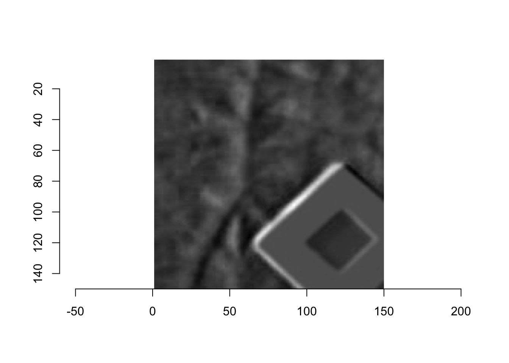

データ可視化系。
連続的にイメージングした2次元経時データ (=動画) から、任意のx/y断面の時系列を表示する。
pixel値 ~ 切断面に沿った座標 * 時間なので3次元可視化- 画像を小さく表示して切断位置を示し、切断位置をインタラクティブに変える
という要件のもと、Shiny上で2次元画像と3次元散布図を連動させて表示する。
成果物
- 切断面固定なサンプル
- 以下のワンライナーで起動するShinyでは上の図の切断面が可変
# ~ 3.5MB
shiny::runGist("f3e768cd0a06b7d3cee12e6dca37c152")データ読み込み
使用するのは葉の分光反射画像の経時データで縦横時間の3次元配列。
suppressMessages(library(tidyverse))
suppressMessages(library(imager))
suppressMessages(library(plotly))
temp <- tempfile()
download.file("https://github.com/KeachMurakami/page/blob/master/data/crosssection_timecourse/data_array.rdata?raw=true", temp, mode = "wb")
data <- read_rds(temp)
(dim_data <- data %>% dim)
# check first frame
data %>%
as.cimg() %>%
plot()
## [1] 150 150 20関数づくり
データを下拵えするための関数を書く。 arrayだと扱いにくいので、long形式のtibbleに変える。
array_to_df <-
function(array){
dim_data <- dim(array)
dt <-
array %>%
as.vector %>%
tibble(value = .,
row = rep(1:dim_data[1], times = dim_data[3] * dim_data[2]),
col = rep(rep(1:dim_data[2], each = dim_data[1]), times = dim_data[3]),
time = rep(1:dim_data[3], each = dim_data[1] * dim_data[2]))
# calculate changes from initial values
dt %>%
dplyr::filter(time == 1) %>%
dplyr::select(initial = value, row, col) %>%
dplyr::left_join(dt, ., by = c("row", "col")) %>%
dplyr::mutate(value = value - initial) %>%
return()
}
data %>%
array_to_df %>%
head %>%
knitr::kable()| value | row | col | time | initial |
|---|---|---|---|---|
| 0 | 1 | 1 | 1 | 0.0252616 |
| 0 | 2 | 1 | 1 | 0.0139020 |
| 0 | 3 | 1 | 1 | -0.0039202 |
| 0 | 4 | 1 | 1 | -0.0161862 |
| 0 | 5 | 1 | 1 | -0.0300683 |
| 0 | 6 | 1 | 1 | -0.0425494 |
下拵えしたデータを図示する関数を書く。 処理済みデータと切断情報を与えるとplotlyの出力を返す。 Shinyに持っていきやすいように、切断情報はinput$XXXのリスト形式で与える。 2D画像はplotly公式を参照しながら。
as.raster %>% raster2uriで数値をカラーコードに変えてhtmlで書くsubplotする前に不要な軸を消してしまうsubplot後にもlayout(scene1 = ..., scene2 = ...)で各プロットにアクセスできるらしい
### 3D
plot_3d <-
function(dt, input){
if(input$cut_direction == "row"){
dt_for_3d <-
dt %>%
dplyr::filter(row == input$cut_index) %>%
dplyr::select(value, section = col, time)
} else {
dt_for_3d <-
dt %>%
dplyr::filter(col == input$cut_index) %>%
dplyr::select(value, section = row, time)
}
dt_for_3d %>%
dplyr::group_by(section) %>%
dplyr::mutate(value = RcppRoll::roll_meanl(value, n = input$smooth)) %>% # smoothing
plot_ly(data = ., x = ~ time, y = ~ section, z = ~ value, scene = "scene1",
color = ~ section, type = "scatter3d", mode = "lines") %>%
return()
}
### 2D
plot_2d <-
function(dt, input){
cutting_band <-
c(input$cut_index + (-input$band_width:input$band_width)) # to indicate cutting position
dt_initial <-
dt %>%
dplyr::filter(time == 1) %>%
dplyr::mutate(initial = (initial - min(initial)) / (max(initial) - min(initial))) %>% # normalize to [0,1]
dplyr::select(initial, row, col)
if(input$cut_direction == "row"){
dt_for_2d <-
dt_initial %>%
dplyr::mutate(initial = if_else(row %in% cutting_band, input$band_fill, initial))
} else {
dt_for_2d <-
dt_initial %>%
dplyr::mutate(initial = if_else(col %in% cutting_band, input$band_fill, initial))
}
array_annotated <-
dt_for_2d$initial %>%
array(dim = c(max(dt$row), max(dt$col), 1))
array_nonannotated <-
dt_initial$initial %>%
array(dim = c(max(dt$row), max(dt$col), 1))
img_annotated <-
abind::abind(array_nonannotated, array_annotated, array_nonannotated) %>%
as.raster
axis_set <- list(title = "", zeroline = FALSE, showline = FALSE, showticklabels = FALSE, showgrid = FALSE)
plot_ly(scene = "scene2") %>%
layout(images = list(
source = raster2uri(img_annotated),
x = 0, y = 1, sizex = .5, sizey = .25,
xanchor = "left", yanchor = "top"),
xaxis = axis_set, yaxis = axis_set) %>%
return()
}
### merge
plot_crosssection <-
function(dt, input){
subplot(plot_3d(dt, input), plot_2d(dt, input)) %>%
layout(showlegend = FALSE)
}Plotlyで図示
切断条件を指定して、プロットする。 冒頭の図がviewerに表示される。
input <- list(cut_direction = "col", cut_index = 30, smooth = 1, band_width = 1, band_fill = .5)
fig_plotly <-
data %>%
array_to_df %>%
plot_crosssection(., input)
# htmlwidgetとして保存
setwd("../plotly")
htmlwidgets::saveWidget(fig_plotly, "crosssection_timecourse.html", selfcontained = T)
setwd("../post")Shinyでアプリケーション化
上記の関数にファイルと切断条件の入力部分を加え、体裁を整えて完成。
雑感
スライドで出したら見栄えはするけども、伝わるものはあまりない。
Session Info
devtools::session_info()## setting value
## version R version 3.5.0 (2018-04-23)
## system x86_64, darwin15.6.0
## ui X11
## language (EN)
## collate en_US.UTF-8
## tz Australia/Brisbane
## date 2018-06-27
##
## package * version date source
## abind 1.4-5 2016-07-21 CRAN (R 3.5.0)
## assertthat 0.2.0 2017-04-11 CRAN (R 3.5.0)
## backports 1.1.2 2017-12-13 CRAN (R 3.5.0)
## base * 3.5.0 2018-04-24 local
## base64enc 0.1-3 2015-07-28 CRAN (R 3.5.0)
## bindr 0.1.1 2018-03-13 CRAN (R 3.5.0)
## bindrcpp * 0.2.2 2018-03-29 CRAN (R 3.5.0)
## blogdown 0.6 2018-04-18 CRAN (R 3.5.0)
## bmp 0.3 2017-09-11 CRAN (R 3.5.0)
## bookdown 0.7 2018-02-18 CRAN (R 3.5.0)
## broom 0.4.4.9000 2018-06-21 Github (tidyverse/broom@2721de4)
## cellranger 1.1.0 2016-07-27 CRAN (R 3.5.0)
## cli 1.0.0 2017-11-05 CRAN (R 3.5.0)
## colorspace 1.3-2 2016-12-14 CRAN (R 3.5.0)
## compiler 3.5.0 2018-04-24 local
## crayon 1.3.4 2017-09-16 CRAN (R 3.5.0)
## crosstalk 1.0.0 2016-12-21 CRAN (R 3.5.0)
## data.table 1.10.4-3 2017-10-27 CRAN (R 3.5.0)
## datasets * 3.5.0 2018-04-24 local
## devtools 1.13.5 2018-02-18 CRAN (R 3.5.0)
## digest 0.6.15 2018-01-28 CRAN (R 3.5.0)
## dplyr * 0.7.5 2018-05-19 cran (@0.7.5)
## evaluate 0.10.1 2017-06-24 CRAN (R 3.5.0)
## forcats * 0.3.0 2018-02-19 CRAN (R 3.5.0)
## ggplot2 * 2.2.1.9000 2018-06-25 Github (tidyverse/ggplot2@1c09bae)
## glue 1.2.0 2017-10-29 CRAN (R 3.5.0)
## graphics * 3.5.0 2018-04-24 local
## grDevices * 3.5.0 2018-04-24 local
## grid 3.5.0 2018-04-24 local
## gtable 0.2.0 2016-02-26 CRAN (R 3.5.0)
## haven 1.1.1 2018-01-18 CRAN (R 3.5.0)
## highr 0.6 2016-05-09 CRAN (R 3.5.0)
## hms 0.4.2 2018-03-10 CRAN (R 3.5.0)
## htmltools 0.3.6 2017-04-28 CRAN (R 3.5.0)
## htmlwidgets 1.2 2018-04-19 CRAN (R 3.5.0)
## httpuv 1.4.3 2018-05-10 cran (@1.4.3)
## httr 1.3.1 2017-08-20 CRAN (R 3.5.0)
## imager * 0.40.2 2017-04-24 CRAN (R 3.5.0)
## jpeg 0.1-8 2014-01-23 CRAN (R 3.5.0)
## jsonlite 1.5 2017-06-01 CRAN (R 3.5.0)
## knitr 1.20 2018-02-20 CRAN (R 3.5.0)
## later 0.7.2 2018-05-01 cran (@0.7.2)
## lattice 0.20-35 2017-03-25 CRAN (R 3.5.0)
## lazyeval 0.2.1 2017-10-29 CRAN (R 3.5.0)
## lubridate 1.7.4 2018-04-11 CRAN (R 3.5.0)
## magrittr * 1.5 2014-11-22 CRAN (R 3.5.0)
## memoise 1.1.0 2017-04-21 CRAN (R 3.5.0)
## methods * 3.5.0 2018-04-24 local
## mime 0.5 2016-07-07 CRAN (R 3.5.0)
## modelr 0.1.2 2018-05-11 cran (@0.1.2)
## munsell 0.4.3 2016-02-13 CRAN (R 3.5.0)
## nlme 3.1-137 2018-04-07 CRAN (R 3.5.0)
## pillar 1.2.3 2018-05-25 cran (@1.2.3)
## pkgconfig 2.0.1 2017-03-21 CRAN (R 3.5.0)
## plotly * 4.7.1 2017-07-29 CRAN (R 3.5.0)
## plyr * 1.8.4 2016-06-08 CRAN (R 3.5.0)
## png 0.1-7 2013-12-03 CRAN (R 3.5.0)
## promises 1.0.1 2018-04-13 CRAN (R 3.5.0)
## purrr * 0.2.5 2018-05-29 cran (@0.2.5)
## R6 2.2.2 2017-06-17 CRAN (R 3.5.0)
## Rcpp 0.12.17 2018-05-18 cran (@0.12.17)
## RcppRoll 0.2.2 2015-04-05 CRAN (R 3.5.0)
## readbitmap 0.1-4 2014-09-05 CRAN (R 3.5.0)
## readr * 1.1.1 2017-05-16 CRAN (R 3.5.0)
## readxl 1.1.0 2018-04-20 CRAN (R 3.5.0)
## reshape2 1.4.3 2017-12-11 CRAN (R 3.5.0)
## rlang 0.2.1 2018-05-30 cran (@0.2.1)
## rmarkdown 1.10 2018-06-11 cran (@1.10)
## rprojroot 1.3-2 2018-01-03 CRAN (R 3.5.0)
## rstudioapi 0.7 2017-09-07 CRAN (R 3.5.0)
## rvest 0.3.2 2016-06-17 CRAN (R 3.5.0)
## scales 0.5.0 2017-08-24 CRAN (R 3.5.0)
## shiny 1.1.0 2018-05-17 cran (@1.1.0)
## stats * 3.5.0 2018-04-24 local
## stringi 1.2.2 2018-05-02 cran (@1.2.2)
## stringr * 1.3.1 2018-05-10 cran (@1.3.1)
## tibble * 1.4.2 2018-01-22 CRAN (R 3.5.0)
## tidyr * 0.8.1 2018-05-18 cran (@0.8.1)
## tidyselect 0.2.4 2018-02-26 CRAN (R 3.5.0)
## tidyverse * 1.2.1.9000 2018-06-21 Github (hadley/tidyverse@a720dcd)
## tools 3.5.0 2018-04-24 local
## utils * 3.5.0 2018-04-24 local
## viridisLite 0.3.0 2018-02-01 CRAN (R 3.5.0)
## withr 2.1.2 2018-03-15 CRAN (R 3.5.0)
## xfun 0.1 2018-01-22 CRAN (R 3.5.0)
## xml2 1.2.0 2018-01-24 CRAN (R 3.5.0)
## xtable 1.8-2 2016-02-05 CRAN (R 3.5.0)
## yaml 2.1.19 2018-05-01 cran (@2.1.19)